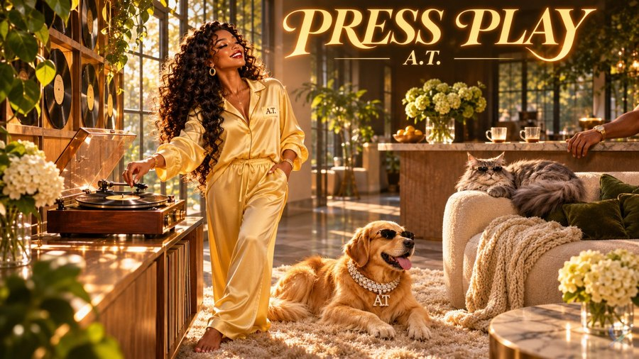

Track 11 · Heart On Pause
Press Play
The morning after he came home. Two cups on the counter and both got coffee in them. His coat back on the hook. No big speech, no starting over: A.T. and her love just pick the song back up right where the music stopped.
 Watch the official video
Watch the official video
Lyrics
[Intro]
Mmm... morning
You're still here
(Still here)
Go on, baby... put the record on
[Verse 1]
Two cups on the counter and they both got coffee in 'em
Your coat back on the hook like it never left the building
I caught myself humming 'fore I even knew the reason
Sunlight on the floorboards, feels like a brand new season
We ain't said much yet, we just moving kinda slow
Feeling out the corners of a room we used to know
But your hand found my shoulder when you reached across for sugar
And something in me answered like a needle on the groove
[Pre Chorus]
The quiet did the talking that we couldn't
And I heard myself in all that space
I missed you more than I thought I would
So I'm done with holding it in place
[Chorus]
So press play, baby, let it run
We ain't starting over, we just picking up
Right where the music stopped, same song, same love
Press play (press play), let it play
Turn it up a little, let the whole house hear
Every word I meant to say is finally clear
Heart was on pause, now I'm right here
Press play, baby, press play
[Verse 2]
Now I'm using all my words instead of rolling both my eyes
You been showing me, not telling, every single day this time
We can agree to disagree and nobody slam a door
Ain't no time out on the table, we don't need it anymore
I still hear you humming when you think I'm in the shower
Still got your old hoodie, wore it every lonely hour
But I'd rather have the real thing than the memory of the sound
So come here, let me show you how it's going down
[Pre Chorus]
The quiet did the talking that we couldn't
And I heard myself in all that space
I missed you more than I thought I would
So I'm done with holding it in place
[Chorus]
So press play, baby, let it run
We ain't starting over, we just picking up
Right where the music stopped, same song, same love
Press play (press play), let it play
Turn it up a little, let the whole house hear
Every word I meant to say is finally clear
Heart was on pause, now I'm right here
Press play, baby, press play
[Bridge]
And what if it skips again? (what if it skips?)
What if we lose the beat somewhere down the line?
Then I'll reach for your hand and I'll find it again
'Cause I know every word to this song of mine
Ohhh, I'm not afraid of the silence no more
Silence brought you back to my door
So if it ever stops, love, we'll just
Ohhhh, press play again! (huge held high note)
[Final Chorus]
So press play, baby, let it run (let it run)
We ain't starting over, we just picking up
Right where the music stopped, same song, same love
Press play (press play), let it play
Turn it up a little, let the whole house hear (let 'em hear)
Every word I meant to say is finally clear
Heart was on pause, now I'm right here (right here)
Press play, baby, press play (huge held high note)
[Outro]
Play... don't stop
Let it run, baby
Same song... same love
Press play... mmm
Written by Grey Beard and A.T. ℗ & © 2026 Threadia AI, Inc. All rights reserved.